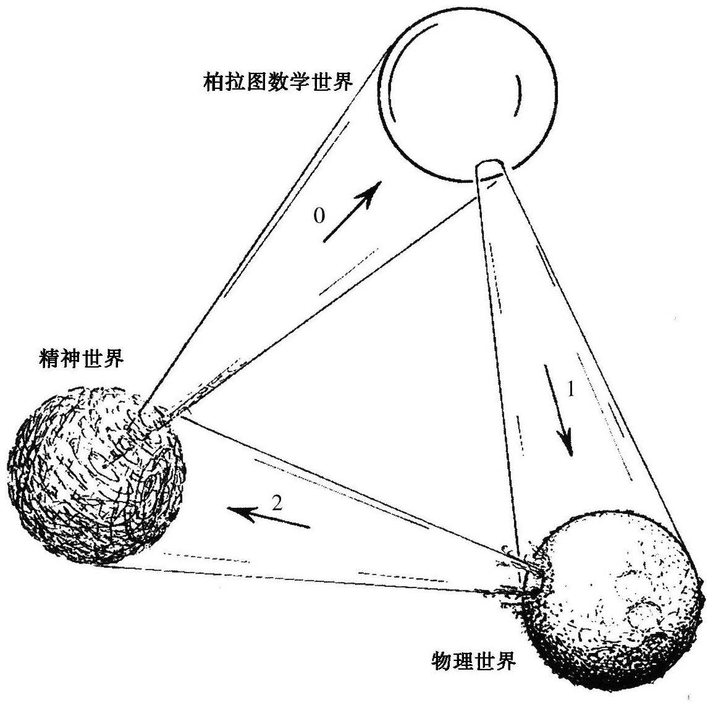

罗杰·彭罗斯
数学有一种独立的实在吗？抑或它只是人类的思想和文化的产物？或许它只是对我们所发现的所谓数学结构那样的东西的一种理想化，而这种数学结构则是对物理世界的结构和动力学行为的一种近似？
在这一章中，我试图阐述数学柏拉图主义在下述两个方面的观点：数学的独立实在的问题和物理行为是否基本取决于这种预先存在的数学的问题。这两个问题构成了本章的基本议题，尽管它们在反对数学柏拉图主义的人那里也许常常被混淆。我将用图4.1来说明我在这些问题上的立场。在图4.1里，我直观地描述了三个“世界”：物理的、精神的和数学的世界，同时也给出了三者之间的神秘联系。[19]
上面提到的数学柏拉图主义的第一个问题就是这里的“奥秘0”——“数学世界”——是否仅仅是我们的精神活动的产物，在此之外不存在任何实在，还是它有它自己的独立存在的实体？如果是后者，原则上我们是否有机会掌握这个世界的全部内容？第二个（独立于前一个问题的）问题——我们用“奥秘1”来描述——涉及数学在物理理论上的作用。数学在我们理解物理世界上毫无疑问是有用的，但这种效用难道仅仅反映了我们在将观测数据整理成某种易于理解的形式方面的熟练程度，揭示了某些方面的物理本质，而所用的数学理论其重要性则在其次，它们仅仅是好用而已？还是像许多理论物理学家所信奉的那样，物理世界的运行对于预先存在的数学秩序真的存在一种深刻而又精确的基本依赖关系？这种数学秩序非常优美和复杂，它们就在那儿等待被发现，而不是我们在探索理解大自然的过程中简单地强加给大自然的。

图4.1三个“世界”：物理世界、精神世界和柏拉图数学世界
要使这三个世界构成完整的联系就涉及“奥秘2”，它反映的是物理实在与精神世界尤其是主观意识之间的关系。意识是如何从一个似乎完全由客观的数学运算控制的世界中产生出来的？或者说，在一定程度上看，意识是主要的吗？在任何意义上，它的存在都是我们称之为“宇宙”的这样一种结构存在的必不可少的先决条件吗？意识这种神秘的现象出现在我们的大脑，到底是仅仅反映了我们的脑结构的复杂性，还是它本身就具有某种其他的复杂性质？而且，如果答案是肯定的，那么要理解这种复杂性是不是唯有靠计算？在目前的计算机时代，这似乎已是一种共识。或者，意识的存在还需要其他的不可能用计算概念来理解的重要的先决条件？如果是后者，那就是说在我们目前用于描述世界的物理学的背后还隐藏着某种东西？或者说我们必须寻找更深层次的（数学？）理论才可能对意识现象进行物理描述？或者说我们可能必须看得更远，对它的理解已经超越了任何一种科学的范畴，采取一种类似宗教在这些问题的基本态度？
在这一章里，鉴于研讨会的主题是数学，因此我主要讨论奥秘0和奥秘1。但是我认为，要对这两个谜团做充分的讨论，就不可能完全抛开奥秘2。我将（借助于哥德尔不完备性）证明，这样一种情形（完全是事实）——我们的大脑能够理解复杂的数学证明，至少在有利的情况下——会使我们得出结论：有意识的大脑的思维不可能完全用计算来诠释，因此，我们的大脑不可能完全是计算物理的产物。不会出现这样一种情形：我们目前理解的物理定律能够包含任何本质上是非计算的东西（这里仅仅具有“随机”性质还不足以被看成是“本质上非计算的”）。由此得出的结论是：有意识的大脑在思维时必然有某些东西是超出我们今天的物理定律所支配的范畴的。我自己的观点是，有意识的大脑思维时的强烈指向性依赖于特定的物理学领域，这个领域可能处于量子/经典的边界，它不在我们今天的物理理论的范畴之内，而所需的物理学革命本身可能还不至于远远超出目前所能理解的范围。
奥秘0的问题确实是一个与上述讨论密切相关的问题。我们将获得数学真理看成是某种“神秘的”事情，其部分原因就在于我们所具有的感知各种特定的数学判断的真理性的能力的性质。正如哥德尔（和图灵）已证明的那样，如果我们将一种具体的、计算上可检验的程序P作为一种有效的数学证明方法加以接受，那么，我们同样必须接受某个命题G（P）的真理性，其中G（P）的真理性不在程序P的范围之内。因此，我们确定数学真理的方法不可能完全还原到我们认为有效的计算过程。虽然不同的逻辑学家对这一结论给出过不同的解释，但在我看来，它的意义很明确：就有意识的理解而言，在纯粹的计算之外必定存在某种必不可少的东西。（有关这一点的进一步讨论，见Penrose，1997。）但在判断数学命题的真理性时有意识的头脑中到底是什么在活动，仍然是个深奥的秘密。
同时，我坚持认为，数学真理具有很强的客观性（事实上，这一点正是哥德尔自己的看法），而不仅是一些在带有任意性的规则的基础上产生的人类文化“游戏”。不过，我乐意接受这样一种观点：有可能存在“一定程度上的柏拉图主义”，就是说，一些数学家可以将某个命题P的真理性当作一种“客观”事实，而另一些数学家则可能采取P的“真”或“假”是一个见仁见智的问题，主要取决于他所依据的是什么样的“人造的”公理系统的观点。我认为，从哥德尔的建构哲学来看，有一点是明确的：数学的某些领域的确是“客观的”，因此是一种不以人的意志而转移的存在。这个领域可以是所谓“Π1句式”的真理，它是这样一类断言：“如此这般的计算过程永远不会终止”（这里的“计算过程”是指“图灵机上的运算”）。Π1句式的一个著名的例子是费马大定理。在我看来，Π1句式是真还是假完全是客观的，所以Π1句式的真值具有一种柏拉图式的实在性，这是毫无疑问的（虽然某些具体的Π1句式的实际建立过程有可能含有一定的主观因素）。
另一方面，一些更复杂的断言，如康托尔的（广义）连续统假设，其真理的客观性也许更值得怀疑。所有这种断言其绝对意义上的真假似乎需要一种更强形式的数学柏拉图主义[20]，而不仅仅依赖于某些特定的“人造”的公理系统。数学家是否是一个柏拉图主义者通常指的正是这种意义上的柏拉图主义。我自己的立场并不特别为这个问题所困扰，对于绝大多数与物理相关的论证来说，相对较弱的柏拉图主义似乎完全足够了。
事实上，要接受上述结论，我们需要考虑的是这样一种“柏拉图数学世界”，它仅需大到足以包括对物理定律的描述即可。对于它的“存在”我们有一种额外的、超乎人类文化或想象的情形。就目前已知的情形而言，物理世界的运行在很高的精度上与数学理论符合得相当好。其中特别引人注目的例子是双中子星系统PSR 1913+16（见Hartle，2003），人类观察它已有30年，对它的脉冲信号的时间间隔的观察与爱因斯坦的广义相对论预言之间的一致性可谓惊人（误差小于十万分之一秒）。这表明，自然世界在其最基本层次（这里是指空间和时间的结构）上的运行机制与复杂的数学理论之间有着非凡的一致性。在我看来，认为这一致性仅仅是我们设法让观测事实符合一套我们可以理解的理论框架的结果，这种想法是没有道理的。自然与复杂而优美的数学之间的这种一致性一直就在“那儿”，时间上远远早于人类的出现，或我们所知的宇宙间任何其他有意识的实体的出现。[21]
致谢
本文得到美国国家自然科学基金PHY—0090091的支助，特在此致谢。
迈克尔·德特勒夫森
罗杰·彭罗斯的这一章里包含了许多要求和想法。这些议题已得到广泛讨论。在本篇评述中，我集中评述以下两点，这也是他关于哥德尔定理的意义的观点的核心所在：
Ⅰ.哥德尔不完全性定理表明，“如果我们接受一种特定的、计算上可检验的程序系统P作为数学证明的有效方法，那么我们同样必须接受某个命题G（P）的真理性，其中G（P）的真理性不在P的程序范围之内。”
Ⅱ.断言Ⅰ.“有明确的蕴含关系：就有意识的理解而言，在纯粹的计算之外必定存在某种必不可少的东西。”
我们可以用更清楚、更熟悉的术语来复述彭罗斯的上述两点：
Ⅰ*.对于任何形式系统P，如果我们接受P的所有公理为真，并且其所有推理法则都是有效的，那么我们就必须合理地接受P的哥德尔句式G（P）[及其P上等价的一致性公式Con（P）]为真。
Ⅱ*.由此清楚地表明，存在一组句子A，我们可以合理地认定，它不可能被形式化（即A不是一个可计算可枚举集合）。
我看不出有什么理由可以信心满满地宣称Ⅰ*或Ⅱ*成立。G（P）及其P上等价的一致性公式Con（P）在逻辑上并不由P隐含，这意味着，在逻辑上必然存在逻辑上不由P隐含的句子。一般来说，我们没有理由相信，所有支持P的推理同样支持这些“额外”的蕴含关系。因此，没有理由认为，对P的合理的接受一定包含着对G（P）/Con（P）的合理的接受。
对于那些认为能够证明P的证据必定也能够证明确信这种一致性合理的人来说，上述推断可能是错的。不过，重要的是要认识到，证明P的一致性与证明G（P）或Con（P）的一致性并不是一回事儿。构成P的一致性的理由未必对G（P）或Con（P）也成立。对于后者，以下补充命题也是必需的：
补充：如果P是一致的，那么G（P）/Con（P）成立。
然而，这样的理由并不一定包括在有关P的一致性的证据中。
当然，不可否认，对这条补充命题也可以进行论证。同样不可否认的是，P可能有着非常令人信服的理由，这些理由已经包括了G（P）/Con（P）成立的令人信服的理由。它的目的只是说明补充命题的非平凡性质，从而对Ⅰ*提出异议，这表明，G（P）/Con（P）的合理接受性往往是以某种预设形式包含在P的合理接受性中的。
对彭罗斯的观点我们还可以从其他方面提出质疑，但限于篇幅这里就不细论述了。